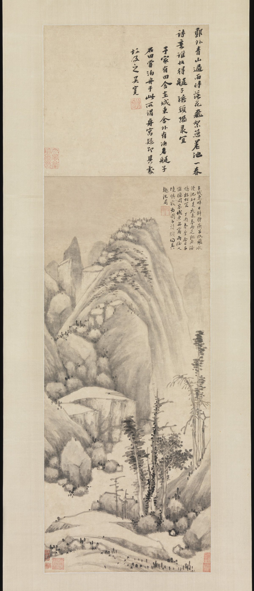

The Metropolitan Museum of Art. Gift of Marie-Hélène and Guy Weill, 2015. 2017.327.1.
Museum record · Public Domain / Met Open Access image
Shen Zhou
Anchorage on a rainy night
dated 1477 · Hanging scroll; ink on paper
Painting and inscription
The Met relates the painting to a boat stay with a friend after rain. Its record provides the poem and inscription in translation, and describes a responding poem by Wu Kuan.
Read the poem and museum account
The complete supplied photograph is retained, including the pictured inscriptions. It is not a claim to show every part of the physical mounting.
Source and viewing copies
Smaller full-frame viewing copies are shown; the unchanged museum files remain linked from the images. No crop, retouch or generated view. Museum-master status is unknown.